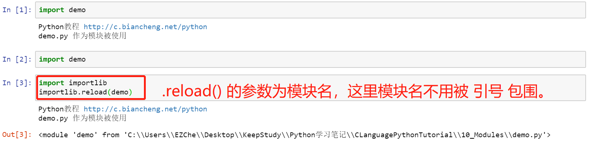

【本文结构】
- 0、参考文献
- 1、模块的概念
- 2、导入模块
- 3、Python 自定义模块
- 4、解决“Python找不到指定模块”的方法
- 5、Python 导入模块的本质
- 6、Python __all__ 变量
- 7、Python 包
- 包的创建和导入
- 补充 Python 3.7 教程中关于包的说明
- __init__.py作用详解
- 8、查看模块
- 查看模块成员：dir() 函数、__all__ 变量
- 查看模块说明文档：help() 函数、__doc__ 变量
- 查看模块的源文件路径：__file__ 变量
- 查看已安装模块：help('module')、pip list
【0 参考文献】
- 如果你从Python解释器退出并再次进入，之前的定义（函数和变量）都会丢失。因此，如果你想编写一个稍长些的程序，最好使用文本编辑器为解释器准备输入并将该文件作为输入运行。这被称作编写 脚本（script）。随着程序变得越来越长，你或许会想把它拆分成几个文件，以方便维护。你亦或想在不同的程序中使用同一个便捷的函数， 而不必把这个函数复制到每一个程序中去。Python 提供了 模块（module）来支持这种文件的拆分，并在脚本或解释器的交互式实例中使用它们。
- 模块：是一个包含Python 定义 和 语句 的文件。文件名就是模块名后跟文件后缀 .py 。
- 在一个模块内部，模块名（作为一个字符串）可以通过全局变量 __name__ 的值获得。
- 模块中的定义可以 导入（import） 到 其它模块 或者 主（main）模块。
- 模块这个文件既可当作一个可调入的模块来使用，也可当作脚本来使用。
- 当作为模块（调入到其它模块或主模块当中）来使用时，在该模块自身内部 __name__ == "该模块名（不带后缀.py）"。
- 当作为脚本来使用时，在该模块自身内部 __name__ == "__main__"。
- 例如，在 demo.py 模块中导入了 test.py 模块，则在 demo.py 模块内部：
- print(__name__) 输出结果为： __main__
- print(test.__name__) 输出结果为： test
- 前面讲了封装，至此，我们已经学习了很多具有封装特性的结构：
- 容器，例如列表、元组、字符串、字典等，它们都是对数据的封装；
- 函数是对 Python 代码的封装；
- 类是对方法和属性的封装，也可以说是对函数和数据的封装。
- 模块，可以理解为是对代码更高级的封装，即把能够实现某一特定功能的代码编写在同一个 .py 文件中，并将其作为一个独立的模块，这样既可以方便其它程序或脚本导入并使用，同时还能有效避免函数名和变量名发生冲突。从而提高了代码的可维护性和可重用性。
- 代码的可重用性体现在：当编写好一个模块后，只要编程过程中要用到该模块中的某个功能（由变量、函数、类实现），无需重复编写，直接在程序中导入该模块即可使用该功能。
- 更一般地说，模块就是 Python 程序，任何 Python 程序都可以作为模块，并作为模块导入。
- 使用 Python 进行编程时，有些功能没必须自己实现，可以借助 Python 现有的标准库或者其他人提供的第三方库，只需要将模块导入到当前程序，就可以直接拿来用。通过 import 语句来导入模块，它的语法可以归纳为以下 2 种情况：
# 方式一：会导入指定模块中的所有成员（包括变量、函数、类等）。且当需要使用模块中的成员时，需用该模块名（或别名）作为前缀，否则 Python 解释器会报错。
import 模块名1 [as 别名1], 模块名2 [as 别名2]，…
# 方式二：只会导入模块中指定的成员，而不是全部成员。同时，当程序中使用该成员时，无需附加任何前缀，直接使用成员名（或别名）即可。
from 模块名 import 成员名1 [as 别名1]，成员名2 [as 别名2]，…
- 第二种 import 方式也可以导入指定模块中的所有成员，即 form 模块名 import ＊，但此方式不推荐使用，在多数情况下，Python 程序猿都不会使用它，原因为：
- 这会调入所有非以下划线 _ 开头的名称，它在解释器中引入了一组未知的名称，而它们很可能会覆盖一些你已经定义过的东西。
- 这通常也会导致代码的可读性很差。不过，在交互式编译器中为了节省打字可以这么用。
- 比如同时导入 module1 和 module2 内的所有成员，假如这两个模块内都有一个 foo() 函数，那么当在程序中调用的这个 foo() 函数到底是 module1 模块中的还是 module2 模块中的？
- 当使用import导入Python模块的时候，默认调用的是__import__()函数。直接使用该函数的情况很少见，一般用于动态加载模块。
- 如果模块中包含空格或者以数字开头，就需要使用 Python 提供的 __import__() 内置函数引入模块，它会返回一个<class 'module'>类型的对象，我们可以将它赋值给一个规范命名的变量名。
- 注意，使用 __import__() 函数引入模块名时，要以字符串的方式将模块名引入，否则会报 SyntaxError 错误。
- 建议一般按照 Python 命名规范来为模块命名，才不用这么曲折地导入。
# 例如，当模块名为"demo text" 时，引入方法如下：
__import__("demo text")
# 如果模块名为 "1demo"，则引入方法如下：
__import__("1demo")
- 出于效率的考虑，每个模块在每个解释器会话中只被导入一次（即使导入同一个模块多次，也只是被执行一次）。因此，如果你更改了你的模块，则必须重新启动解释器， 或者，如果它只是一个要交互式地测试的模块，请使用 importlib.reload()，它会返回一个<class 'module'>类型的对象，我们可以将它赋值给一个规范命名的变量名。例如： import importlib; importlib.reload(modulename)（实例程序中的模块 demo 是下面第3节 "Python 自定义模块" 的 demo.py 文件）

- 前面说过，Python 模块就是 Python 程序，换句话说，只要是 Python 程序，都可以作为模块导入。
- 注意，一般来说，在模块文件中， if __name__ == "模块名(不带后缀.py)": 这一整个代码块是不用存在的，我这里只是为了测试当 demo.py 这个文件作为模块被导入时，这个代码块是不是可以被以该方式接入和执行。
- 而模块种的 if __name__ == "__main__" : 这个代码块中的代码用于测试，通常是测试该模块中各个功能是否能够成功运行。


- 通常情况下，当使用 import 语句导入模块后，Python 会按照以下顺序查找指定的模块文件：
- 在当前目录，即当前执行的程序文件所在目录下查找；
- 到 PYTHONPATH（环境变量）下的每个目录中查找；
- 到 Python 默认的安装目录下查找。
- 以上所有涉及到的目录，都保存在标准模块 sys 的 sys.path 变量中，通过此变量我们可以看到指定程序文件支持查找的所有目录。换句话说，如果要导入的模块没有存储在 sys.path 显示的目录中，那么导入该模块并运行程序时，Python 解释器就会抛出 ModuleNotFoundError（未找到模块）异常。
- 解决“Python找不到指定模块”的方法有 3 种，分别是：
- 向 sys.path 中临时添加模块文件存储位置的完整路径；
- import sys
- sys.path.append( "路径" )
- 将模块放在 sys.path 变量中已包含的模块加载路径中；
- 设置 path 系统环境变量。（详细介绍见原文）
- 在 Windows 平台上设置环境变量
- 对于普通用户来说，设置用户 path 变量和系统 path 变量的效果是相同的，但 Python 在使用 path 变量时，会先按照系统 path 变量的路径去查找，然后再按照用户 path 变量的路径去查找。
- 在 Linux 上设置环境变量
- Linux 平台的环境变量是通过 .bash_profile 文件来设置的。
- Linux 与 Windows 平台不一样，多个路径之间以冒号 : 作为分隔符。
- 在Mac OS X 上设置环境变量
- 用 "import 模块名" 来导入模块的本质就是：
- 模块中的全部代码加载到内存并执行，然后将整个模块内容赋值给与模块同名的变量，该变量的类型是 module，而在该模块中定义的所有程序单元都相当于该 module 对象的成员。

- 使用 "from 模块名 import 成员列表" 来导入模块中的成员的本质就是：
- 将模块中的全部代码加载到内存并执行，# 然后只导入指定变量、函数等成员单元，并不会将整个模块导入，因此上面程序在 print(demo) 时将看到 "name 'demo' is not defined"的错误提示。

- 当我们向文件导入某个模块时，导入的是该模块中那些名称不以下划线（单下划线“_”或者双下划线“__”）开头的变量、函数和类。因此，如果我们不想模块文件中的某个成员被引入到其它文件中使用，可以在其名称前添加下划线。
- Python 模块 __all__ 变量：它的值是一个列表，存储的是当前模块中一些成员（变量、函数或者类）的名称。通过在模块文件中设置 __all__ 变量，当其它文件以“ from 模块名 import * ”的形式导入该模块时，该文件中只能使用 __all__ 列表中指定的成员。
- 也就是说，只有以“from 模块名 import *”形式导入的模块，当该模块设有 __all__ 变量时，只能导入该变量指定的成员，未指定的成员是无法导入的。
- 如果使用以下 2 种方式引入模块，则 __all__ 变量的设置是无效的。
- 以“import 模块名”的形式导入模块。通过该方式导入模块后，总可以通过模块名前缀（如果为模块指定了别名，则可以使用模快的别名作为前缀）来调用模块内的所有成员（除了以下划线开头命名的成员）。
- 以“from 模块名 import 成员”的形式直接导入指定成员。使用此方式导入的模块，__all__ 变量即便设置，也形同虚设。
- 实际开发中，一个大型的项目往往需要使用成百上千的 Python 模块，如果将这些模块都堆放在一起，势必不好管理。而且，使用模块可以有效避免变量名或函数名重名引发的冲突，但是如果模块名重复怎么办呢？因此，Python提出了包（Package）的概念。
- 包（Package）：是一种通过用“带点号的模块名”来构造 Python 模块命名空间的方法。 例如，模块名 A.B 表示 A 包中名为 B 的子模块。
- Python 中的包，它本质上也是模块，是有效管理模块的工具。
- 通过 type(package_name) 会发现结果为：<class 'module'>，这也证实了包的本质就是模块。
- 简单理解，包就是文件夹，只不过在该文件夹下必须存在一个名为“__init__.py” 的文件。
- 注意，这是 Python 2.x 的规定，而在 Python 3.x 中，__init__.py 对包来说，并不是必须的。
- 包是一个含有多个模块的文件夹，它的本质依然是模块，因此包中也可以含有包（子包）。
- 每个包的目录下都必须建立一个 __init__.py 的模块，可以是一个空模块，可以写一些初始化代码，其作用就是告诉 Python 要将该目录当成包来处理。
- 注意，__init__.py 与同一个包下的其它模块文件不同，__init__.py 模块的模块名不是 __init__，而是它所在的包名。例如，在 settings 包中的 __init__.py 文件，__init__.py 的模块名就是 settings。
- Python 库：相比模块和包，库是一个更大的概念，例如在 Python 标准库中的每个库都有好多个包，而每个包中都有若干个模块。
- 包是一个包含“__init__.py”文件的文件夹。因此，如果我们想手动创建一个包，只需进行以下 2 步操作：
- 1. 新建一个文件夹，文件夹的名称就是新建包的包名；
- 2. 在该文件夹中，创建一个 __init__.py 文件（前后各有 2 个下划线‘_’），该文件中可以不编写任何代码。当然，也可以编写一些 Python 初始化代码，则当有其它程序文件导入包时，会自动执行该文件中的代码。
- 包其实本质上还是模块，故导入模块的语法同样也适用于导入包。无论导入我们自定义的包，还是导入从别处下载的第三方包，导入方法有以下 3 种：
import 包名[.模块名 [as 别名]]
from 包名 import 模块名 [as 别名]
from 包名.模块名 import 成员名 [as 别名]
- 用 [] 括起来的部分，是可选部分，即可以使用，也可以直接忽略。
- 注意，导入包的同时，会在包目录下生成一个含有类似 __init__.cpython-36.pyc 文件的 __pycache__ 文件夹。
- 我们这里创建了一个名为 my_package 的包，它的文件结构和程序如右图：

包的导入方式 | 说明 | 示例程序 | |
import 包名 [.模块名 [as 别名]] | import 包名 [as 别名] | 当直接导入指定包时，程序会自动执行该包所对应文件夹下的 __init__.py 文件中的代码。 直接导入包名，并不会将包中所有模块全部导入到程序中（如果没有在包的 __init__.py 中实现的话），它的作用仅仅是导入并执行包下的 __init__.py 文件，因此，运行该程序，在执行 __init__.py 文件中代码的同时，还会抛出 AttributeError 异常（访问的对象不存在）： |  |
import 包名 .模块名 [as 别名] | 通过此语法格式导入包中的指定模块后，在使用该模块中的成员（变量、函数、类）时，需添加“包名.模块名”为前缀，即 “包名.模块名.成员名”。 当然，如果使用 as 给包名.模块名”起一个别名的话，就使用直接使用这个别名作为前缀使用该模块中的成员了，即 "别名.成员名"。 |  | |
from 包名 import 模块名 [as 别名] | 使用此语法格式导入包中模块后，在使用其成员时不需要带包名前缀，但需要带模块名或其别名作为前缀。 既然包也是模块，那么这种语法格式自然也支持 from 包名 import * 这种写法，它和 import 包名 的作用一样，都只是将该包的 __init__.py 文件导入并执行。 | 程序示例见参考文献原文 | |
from 包名.模块名 import 成员名 [as 别名] | 向程序中导入“包.模块”中的指定成员（变量、函数或类）。通过该方式导入的变量（函数、类等），在使用时可以直接使用变量名或其别名（函数名、类名等）调用。 另外，在使用此种语法格式加载指定包的指定模块的成员时，可以使用 * 代替成员名，表示加载该模块下的所有成员。即： from 包名.模块名 import * | 程序示例见参考文献原文 | |
示例包（含子包）的文件结构 |  |
包的导入 | 请注意，当使用 from package import item 时，item可以是包的子模块（或子包），也可以是包中定义的其他名称，如函数，类或变量。 import 语句首先测试是否在包中定义了item；如果没有，它假定它是一个模块并尝试加载它。如果找不到它，则引发 ImportError 异常。 相反，当使用 import item.subitem.subsubitem 这样的语法时，除了最后一项之外的每一项都必须是一个包；最后一项可以是模块或包，但不能是前一项中定义的类或函数或变量。 |
从包中 导入 * | 当用户写 from sound.effects import * （即：from 包.子包 import 所有模块）会发生什么？理想情况下，人们希望这会以某种方式传递给文件系统，找到包中存在哪些子模块，并将它们全部导入。这可能需要很长时间，导入子模块可能会产生不必要的副作用，这种副作用只有在显式导入子模块时才会发生。 唯一的解决方案是让包作者提供一个包的显式索引。import 语句使用下面的规范：如果一个包的 __init__.py 代码定义了一个名为 __all__ 的列表，它会被视为在遇到 from package import * 时应该导入的模块名列表。在发布该包的新版本时，包作者可以决定是否让此列表保持更新。包作者如果认为从他们的包中导入 * 的操作没有必要被使用，也可以决定不支持此列表。例如，文件 sound/effects/__init__.py 可以包含以下代码: __all__ = ["echo", "surround", "reverse"] 这意味着 from sound.effects import * 将导入 sound 包的三个命名子模块。 如果没有定义 __all__，from sound.effects import * 语句 不 会从包 sound.effects 中导入所有子模块到当前命名空间；它只确保导入了包 sound.effects （可能运行任何在 __init__.py 中的初始化代码），然后导入包中定义的任何名称。这包括 __init__.py` 定义的任何名称（以及显式加载的子模块）。它还包括由之前的 import 语句显式加载的包的任何子模块。思考下面的代码: import sound.effects.echo import sound.effects.surround from sound.effects import * 此例子中， echo 和 surround 模块是在执行 from...import 语句时导入到当前命名空间中的，因为它们定义在 sound.effects 包中。（这在定义了 __all__ 时也有效。） 虽然某些模块被设计为在使用 import * 时只导出遵循某些模式的名称，但在生产代码中它仍然被认为是不好的做法。 请记住，使用 from package import specific_submodule 没有任何问题！ 实际上，除非导入的模块需要使用来自不同包的同名子模块，否则这是推荐的表示法。 |
子包参考 | 当包被构造成子包时（例如 sound 包中的 formats,effects,filters 这三个子包），你可以使用绝对导入来引用兄弟包的子模块。例如，如果模块 sound.filters.vocoder 需要在 sound.effects 包中使用 echo 模块，它可以使用 from sound.effects import echo 。 此外，还可以使用 import 语句的 from module import name 形式编写相对导入。这些导入使用前导点来指示相对导入中涉及的当前包和父包。例如，在子包 sound.effects 的 surround 模块内部，你可以使用: from . import echo # 从 surround 模块所在的当前包（即父包）sound.effects 中导入兄弟模块 echo.py from .. import formats # 从 surround 模块所在的当前包（即父包）sound.effects 的父包 sound 导入其子包 sound.formats from ..filters import equalizer # 从 surround 模块所在的当前包（即父包）sound.effects 的父包 sound 的子包 sound.filters 导入其模块 equalizer.py 请注意，相对导入是基于当前模块的名称进行导入的。由于主模块的名称总是 "__main__" ，因此用作Python应用程序的主模块中使用的模块必须始终使用绝对导入。 |
多个目录中的包 | 包支持另一个特殊属性， __path__ 。它被初始化为一个列表，其中包含在执行该文件中的代码之前保存包的 __init__.py 文件的目录的名称。这个变量可以修改；这样做会影响将来对包中包含的模块和子包的搜索。 虽然通常不需要此功能，但它可用于扩展程序包中的模块集。 |
- __init__.py 文件的主要作用是导入该包内的其它模块： 我们知道，导入包就等同于导入该包中的 __init__.py 文件，因此完全可以在 __init__.py 文件中直接编写实现模块功能的变量、函数和类，但实际上并推荐大家这样做，因为包的主要作用是包含多个模块。因此 __init__.py 文件的主要作用是导入该包内的其他模块。
- 也就是说，通过在 __init__.py 文件使用 import 语句将包内的必要模块导入，这样当在其他程序中使用 import 包名（或from 包名 import *）时，就可以导入此包中我们已经在 __init__.py 里导入的那些模块或者模块中的变量并直接使用（以包名或包的别名为前缀）。
- 例如，向前面我们自定义的 my_package 包的 __init__.py 文件中编写如下代码：

【8 查看模块】
- dir() 函数
- 通过 dir() 函数，我们可以查看某指定模块包含的全部成员（包括变量、函数和类）。注意这里所指的全部成员：
- 不仅包含可供我们调用的模块成员，
- 还包含所有名称以双下划线“__”开头和结尾的成员，而这些“特殊”命名的成员，是为了在本模块中使用的，并不希望被其它文件调用。
# 这里推荐一种可以忽略显示 dir() 函数输出的特殊成员的方法。仍以 string 模块为例：
import string
[e for e in dir(string) if not e.startwith("_") ]
- __all__ 变量
- 借助该变量也可以查看模块（包）内包含的所有成员。
- 和 dir() 函数相比，__all__ 变量在查看指定模块成员时，它不会显示模块中的特殊成员，同时还会根据成员的名称进行排序显示。
- 不过需要注意的是，并非所有的模块都支持使用 __all__ 变量，因此对于获取有些模块的成员，就只能使用 dir() 函数。
- help() 函数
- 在使用 dir() 函数和 __all__ 变量的基础上，虽然我们能知晓指定模块（或包）中所有可用的成员（变量、函数和类），但 还是不清楚这些名称分别表示的是什么意思，更不清楚各个成员有什么功能。
- 这时可以使用 help() 函数来获取指定成员（甚至是该模块）的帮助信息。
- 例如，我们先借助 dir() 函数，查看 某个包或者模块中有多少可供我们调用的成员，再使用 help() 函数来查看这些成员的具体含义。
- __doc__ 变量
- 值得一提的是，之所以我们可以使用 help() 函数查看具体成员的信息，是因为该成员本身就包含表示自身身份的说明文档（本质是字符串，位于该成员内部开头的位置）。前面讲过，无论是函数还是类，都可以使用 __doc__ 属性获取它们的说明文档，模块也不例外。
- 其实，help() 函数底层也是借助 __doc__ 属性实现的。
- 如果使用 help() 函数或者 __doc__ 属性，仍然无法满足我们的需求，还可以使用以下 2 种方法：
- 调用 __file__ 属性，查看该模块或者包文件的具体存储位置，直接查看其源代码。
- __file__ 变量
- 当导入某个包时其实际上执行的是该包的 __init__.py 文件，因此这里通过 __file__ 变量查看包的存储路径，输出的 __init__.py 文件的存储路径。
- 下载和安装第三方模块，可以使用 Python 提供的 pip 命令实现。pip 命令的语法格式如下：
pip install | uninstall 模块名
- pip 命令会将下载完成的第三方模块，默认安装到 Python 安装目录中的 \Lib\site-packages 目录下。
- pip list
- 可以查看已经安装的第三方模块。
- help('modules')
- 如果想要查看 Python 中目前有哪些模块（包括标准模块和第三方模块），可以在 IDLE 中输入 help("module") 命令。
- 提示：在大型程序中，往往需要导入很多模块，建议初学者在导入模块时，优先导入 Python 提供的标准模块，再导入第三方模块，最后导入自定义模块。